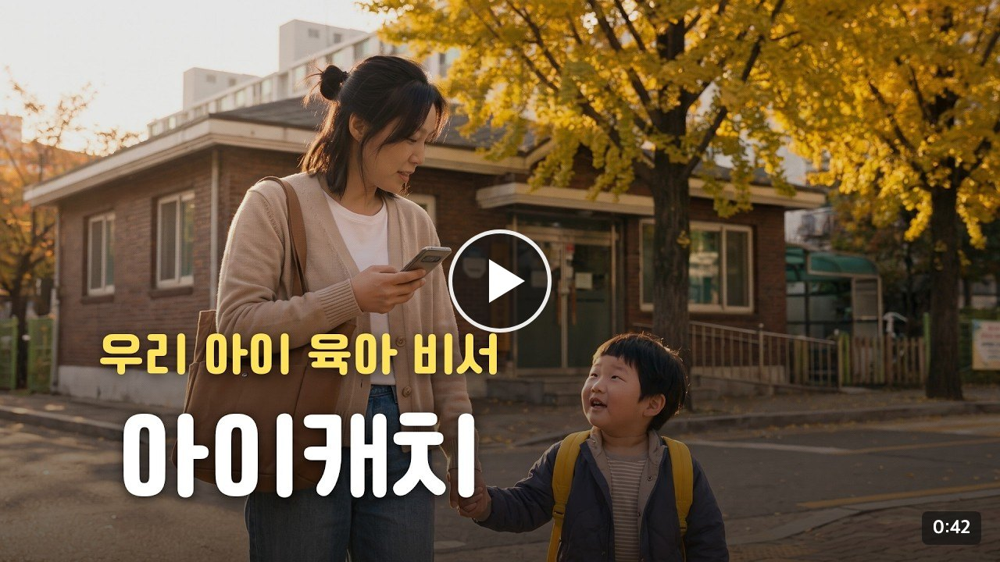
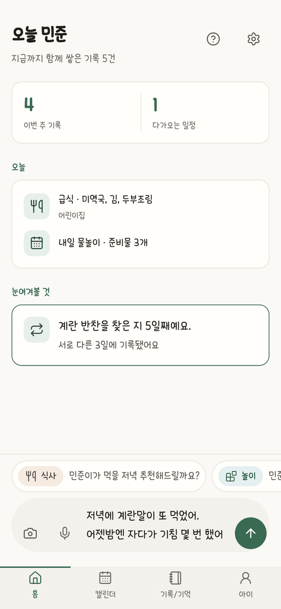
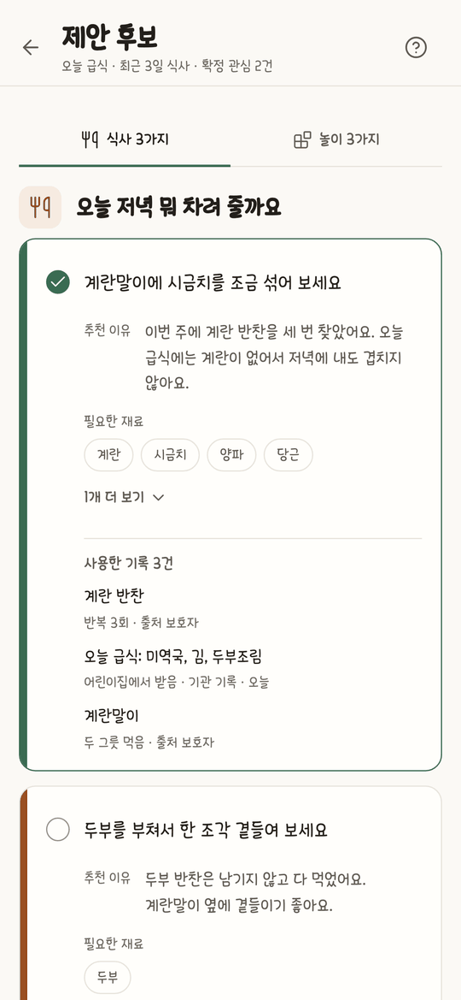
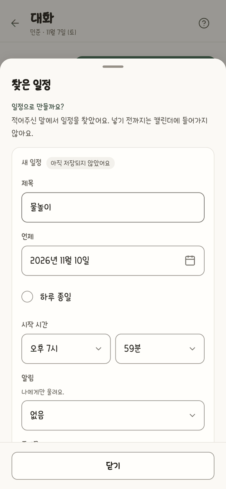

포트폴리오 · 2026
모델에게 맡길 일과
코드가 막을 일을 나눕니다
LLM Agent 를 만들고, 그 Agent 가 정말 그렇게 움직이는지 잽니다. 카카오테크 캠퍼스 4기 팀 프로젝트에서 육아 비서 아이캐치의 놀이 추천 Agent 와 AI 품질 평가를 맡았습니다.README · 만든 사람들
이 페이지의 규칙
아이캐치에는 근거 기록을 달지 못한 개인화 추천은 버그다
라는 규칙이 있습니다.
이 페이지도 같은 규칙으로 썼습니다. 저에 대한 주장마다 PR · 문서 근거를 달았고,
근거가 빠진 주장은 오른쪽 숫자가 페이지를 읽어 직접 셉니다.
대표 프로젝트
아이캐치
한 줄만 남기면, 우리 아이에게 맞는 다음 할 일로 돌아오는 육아 비서

소개 영상 0:42 — GitHub README 에서 재생됩니다- 기간
- 2026.09 – 2026.11 · 10주
- 팀
- 6명 · 카카오테크 캠퍼스 4기 2단계 · 부산대 3팀
- 내 몫
- AI Agent(Activity) · AI 품질 평가 · 공공데이터 연동
- 배포
- 웹 · Android 웹뷰 앱. CI 를 통과하면 AWS EC2 에 자동 배포배포 문서
실서비스는 팀이 서버를 켜 둔 동안에만 열리고, 카카오 계정으로 로그인합니다. 닫혀 있으면 아래 데모로 보실 수 있습니다.
01문제 정의
일하면서 아이를 키우는 보호자는 알림장 · 일정 · 식사 · 지난 경험처럼 흩어진 정보를 매번 직접 찾아 잇고, 지금 무엇이 중요한지 판단해 다음 행동까지 정합니다. 기록 앱이 있지만 오래 쓰이지 않았습니다.
0 / 9
아이가 있는 보호자 9명 중 지금 기록을 남기는 사람설문
7 / 9
하다가 그만둔 사람. 그중 5명이 매일 입력이 번거로웠다
나 다시 볼 일이 없었다
를 골랐습니다설문
8 / 9
지난 한 달 사이 주말에 아이와 무엇을 할지 검색한 사람설문 → 제가 맡은 놀이 추천이 푸는 문제
2026년 8월 · 보호자 10명 온라인 설문. 표본이 작아서 방향을 잡는 데만 썼습니다.
부족한 건 정보가 아니라 연결이었습니다. 보호자는 이미 매일 가족에게 아이 이야기를 합니다. 새 습관을 요구하지 않고, 그 한 줄을 받는 곳만 바꿉니다.
가족에게 말하듯 한 줄을 남기면 AI 가 식사 · 건강 · 놀이 기록으로 나눠 저장하고, 쌓인 기록을 근거로
저녁 메뉴 · 주말 놀이 · 일정 같은 다음 할 일을 준비합니다. 추천마다 어떤 기록을 썼는지 보여 주고,
기록이 없으면 일반 추천
이라고 밝힙니다. 알레르기와 날짜는 모델이 아니라 코드가 막습니다.

① 말하듯 적습니다 ② 나눠서 저장합니다
② 나눠서 저장합니다
③ 근거가 달린 추천
④ 되돌릴 수 없는 것만 묻습니다
화면: 아이캐치 팀 저장소의 README
02데모

실제 앱 · 시연 영상에서 하원길 장면만 자른 것README
보호자가 말로 남긴 것은 이것뿐입니다.
민준이가 점심을 많이 안 먹었대. 저녁엔 오일째 계란말이만 해달래. 오늘 저녁은 다른 계란 요리 추천해 줘
- 한 줄이 기록 두 건으로 나뉘어 저장됩니다
- 닷새째 계란말이였다는 기록을 근거로 다른 계란 요리를 고릅니다
- 처음 보는 식품은 먹어 본 적이 있는지 먼저 묻습니다
- 일정은 보호자가 누르기 전까지 캘린더에 들어가지 않습니다
03역할
04한 줄이 놀이 추천이 되기까지
새 기능을 붙일 때마다 먼저 물었습니다. 틀렸을 때 되돌릴 수 있나? 못 되돌리면 사람이 승인합니다. 100% 맞아야 하나? 그러면 코드가 합니다. 나머지만 LLM 이 합니다. 아래는 제가 만든 Activity Agent 가 한 줄을 처리하는 순서입니다.
이번 주말에 밖에서 놀 만한 데 있을까?
- 코드 0
- LLM 0
- 사람 0
-
LLM
Supervisor 가 요청인지 기록인지 가른다
모델이 의도를
요청형
으로 보고 놀이를 맡는 Activity 에 넘깁니다. 맡길 Agent 는 최대 2개입니다.의도: 요청형 → agent: activity
-
코드
모델을 부르기 전에 날씨부터 본다
단기예보 · 대기질 · 자외선 · 특보를 동시에 조회하고, 나들이를 물었으면 근처 행사 읽기를 같이 시작합니다. 주말은 하루라도 바깥이 되면 엽니다.
토 바깥 가능 · 일 비 → 주말 바깥 열림
-
코드
월령으로 열 tool 을 정한다
나이 계산은 모델에게 묻지 않습니다. 36개월이라 관심 프로필 조회가 열리고, 위치가 있어 장소 · 행사 조회도 열립니다. 월령에 맞는 [예시] 문서 5행을 고릅니다.
열린 tool: 기억 · 날씨 · 일정 · 장소 · 행사
-
LLM
모델이 tool 을 불러 후보 3개를 만든다
놀이 기억 · 근처 장소 · 그날 행사를 조회하고 마지막에 한 번 후보를 제출합니다. 알레르기 이름은 프롬프트에 싣지 않습니다.
① 공원에서 낙엽 모아 왕관 만들기 ② 가을 축제에서 인형극 보기 ③ 쿠키 반죽 빚어 굽기 체험
-
코드
안전 필터가 검증의 맨 앞에 선다
위험 용어 사전을 월령과 대조하고, 후보의 음식 칸은 Food 메뉴 판정으로 봅니다. 걸린 후보는 고치지 않고 뺍니다. 모델에게는 사유 없이 제외 목록만 주고 한 번 더 부릅니다 — 사유를 알려 주면 단어만 바꿔 빠져나가는 법을 가르치게 됩니다.
③ foods: [쿠키] → 밀 → 제외 재호출 1회 → ③ 도서관에서 가을 그림책 읽기
-
코드
지어낸 이름은 내보내지 않는다
장소 · 행사 이름은 이번 조회 결과에 있는 것만, 행사는 그날 실제로 열리는지 일정 원문으로 봅니다. 근거 id 는 조회가 돌려준 것만 받고, 7일 안에 한 놀이는 다시 내지 않습니다.
장소 ✓ · 행사 일정 ✓ · 근거 id ✓ · 최근 중복 ✓
-
사람
보호자가 고르고, 일정은 승인해야 들어간다
추천에는 이유와 사용한 기록이 붙습니다. 캘린더에 넣는 것은 되돌리기 어려워서 보호자가 누르기 전에는 저장하지 않습니다.
예시 결과
OO근린공원에서 낙엽 모아 왕관 만들기
추천 이유지난주 낙엽 놀이 기록이 두 번 있어요. 토요일은 맑아서 바깥에서 하기 좋아요.
사용한 기록 2건 · 낙엽 밟기 놀이 · 공원 산책
이 놀이를 토요일 일정으로 넣을까요? 넣기
실제 호출 화면이 아니라 설계 문서의 실행 흐름 · 출력 검증 순서를 따라 다시 그린 것입니다. 아이 정보와 후보는 지어낸 예시입니다.설계 문서 §3
05부딪힌 것
고친 것보다 되돌린 것에서 더 많이 배웠습니다. 세 가지를 골랐습니다.
근거 검사 · 프롬프트
근거 검사를 더했더니 억지 추천이 늘었다
- 문제
- 일반 추천
종이컵 쌓기
에 상관없는노래하며 손 씻기
문서가 근거로 붙었습니다. 관련성 검사를 더했는데, 같이 바꾼 프롬프트 지시가 모델을 예시 쪽으로 끌어당겼습니다.PR #557 - 한 일
- 통째로 되돌리고 그 범위를 확인하지 않은 것이 제 실수라고 PR 에 적었습니다. 그다음
보호자가 놀이를 정해 물으면 그 요청에 맞춰 낸다
로 다시 설계했습니다.PR #590#597 - 재 보고 정한 것
- 후보가 요청에 맞는지 코드로 막기 전에 먼저 쟀습니다. 요청 기반 후보 391개를 다른 모델로 판정하고, 판정 모델을 믿어도 되는지 일부러 엇갈리게 붙인 대조군 120개를 같이 넣었습니다. 관계없는 후보는 1건이라 코드로 막지 않았습니다.기록
안전 · 알레르기
알레르기를 막으면 새고, 풀면 오탐이 난다
- 문제
- 놀이 문장에서 알레르기 이름을 글자로 찾으니
장난감 자동차
가 감자로 걸리고, 밀 알레르기 아이에게쿠키 반죽 빚어 굽기
는 통과했습니다.기록
지연 · 20초 예산
그날 첫 질문만 시간 안에 못 끝났다
- 문제
- 캐시가 빈 첫 run 에서
주말에 갈만한 행사 추천해줘
가시간 안에 답을 만들지 못했어요
로 끝났습니다. Activity 만 17~19초여서 앞 단계까지 더하면 20초를 넘었습니다.PR #906 - 한 일
- 행사 읽기를 날씨 조회와 동시에 시작하고, 일정 읽기에 상한을 뒀습니다. 마감이 가까우면 마지막 후보 작성 몫 6초를 남기고, 못 읽은 행사는 이번 결과에서만 빼고 뒤에서 캐시를 채웁니다.PR #906
06결과
근거를 단다
· 알레르기는 코드가 막는다
는 말은 재 봐야 압니다.
제가 만든 평가 하네스로 실제 모델을 돌려 잰 팀 전체 숫자입니다.
07기술
제가 쓴 것
팀이 함께 쓴 것
저장이 검색보다 먼저여야 해서 백엔드와 AI 를 한 서비스로 묶었고, 벡터 DB 를 따로 두지 않고 PostgreSQL 한 곳에 뒀습니다.README
그 밖의 작업
다른 프로젝트
NoticeDelta
정정공고가 나오면 내 자격 · 마감 · 금액 변화만 골라 알려 주는 지원사업 비서. 자격은 코드로 판정하고 판정마다 원문 근거를 붙입니다. 바뀐 문단에 걸린 필드만 다시 추출하는 변경 영향 엔진.
저장소 →TrustLens
이미지를 여러 근거로 분석하는 검증 보조 앱. AI 생성 가능성 · 동일 이미지 검색 · EXIF · ELA 와 직접 학습한 TFLite 품질 모델을 한 리포트로 묶습니다.
저장소 →FarmBroker
도심 유휴공간 · 도심 농부 · 소비자를 잇는 스마트팜 중개 플랫폼. 공간 수익 예측, AI 작물 추천, 매칭 · 계약 · 생산 이력까지.
저장소 →LoL AI Platform
Riot API 데이터와 타임라인 분석 · 승률 예측 · Agent 가 쓰는 코칭 리포트를 묶은 게임 분석 플랫폼.
저장소 →